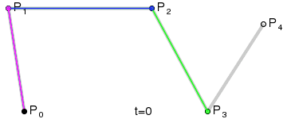
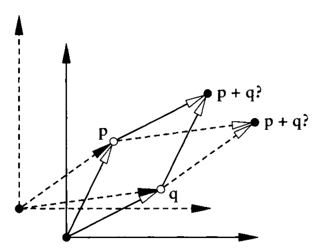
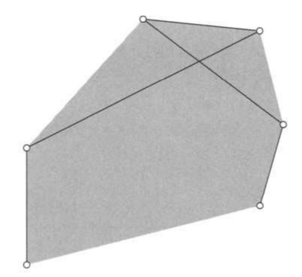
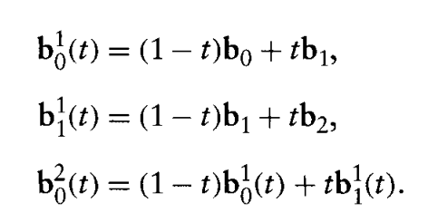
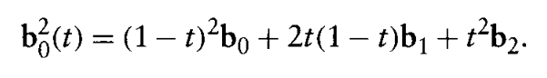
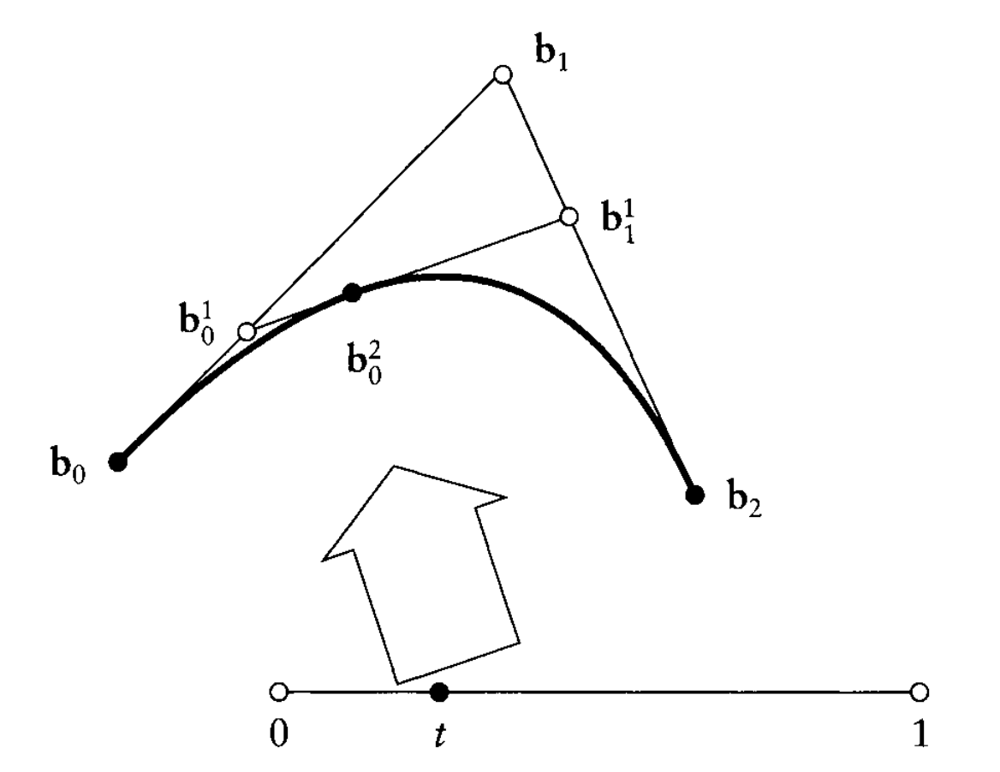
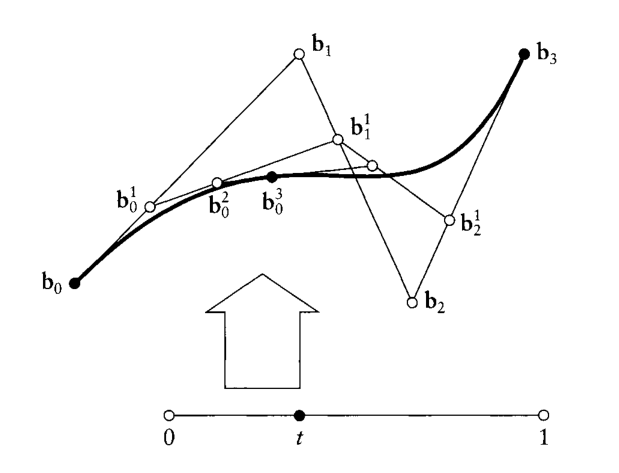
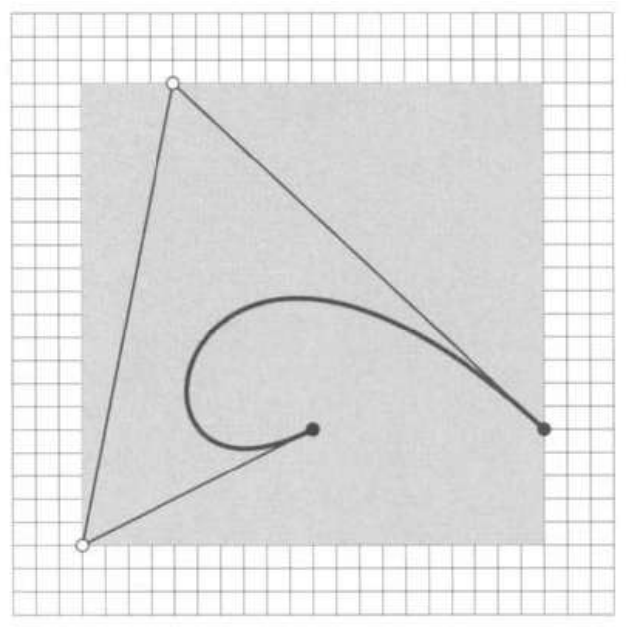

Curvas de Bezier, uma introdução.
Desde fontes para texto [1] até curvas que delineam o formato exato de objetos complexos [2], as Curvas de Bézier estão por trás da representação de diversos objetos em computação gráfica.
 Gif 1. Curva de Bezier dada por 3 pontos [3]
Gif 1. Curva de Bezier dada por 3 pontos [3]

Gif 2. Curva de Bezier dada por 5 pontos [3]Surgindo devido a uma demanda de designers automobilísticos em 1960, essa representação veio solucionar o problema das especificações de formas livres, utilizadas por Pierre Bézier para desenhar o exato o modelo de um carro.
(imagem do desing do carro)Para definí-las matematicamente, primeiro precisamos definir o que é um espaço afim.
Queremos trabalhar em um sistema em que os pontos não estejam atrelados a um referêncial em específico. Por exemplo, se tivermos $$a,b,c \in \mathbb{R^2}$$ estamos implicitamente escolhendo a origem (0,0). O espaço onde a origem não é fixa é denominado espaço afim e, nesse contexto, $$a,b,c \in \mathbb{E^2}$$
Em \( \mathbb{E^2} \) não temos um referêncial, logo não podemos apenas somar pontos, pois não conseguimos determinar (sem um referencial) qual seria o resultado dessa operação. Veja o problema do referêncial na imagem abaixo

Imagem 1. Inderterminação da soma de pontos em \(\mathbb{E^2}\) [1]Entretanto, dado \(a,b \in \mathbb{E^2}\), podemos determinar o vetor \(v = b-a \in \mathbb{R^2}\). Além disso, dado qualquer vetor \(w \in \mathbb{R^2}\) podemos ter o ponto \(c = a + w \in \mathbb{E^2}\).

Imagem 2. Combinação convexa de pontos de um poligono [1]Se fixarmos uma origem, todo mapa afim é da forma \(\psi (x) = Ax+v\). (Exercício 2)
A seguir, veremos a animação de algumas transformações afins.
Se \(\phi \) é uma função afim, decorre que a interpolação linear de dois pontos é invariante em relação a \(\phi \). Mais precisamente, se $$x(t) = (1-t)a + tb$$ Então $$\phi(x(t)) = \phi((1-t)a+tb) = (1-t)\phi(a)+t\phi(b)$$
Além disso, dado \(x(t) = (1-t)a + tb\) e fixado \(t \neq 1\), definimos $$k \in \mathbb{R}$$ como o único real tal que $$(x-a)=k(b-x)$$ Nesse caso denotaremos $$\dfrac{x-a}{b-x} = k$$
Da definição acima, vemos que $$x(t)-a=t(b-a)$$ $$\Rightarrow \dfrac{x(t)-a}{b-x} = t \cdot \dfrac{b-a}{b-x} = \dfrac{t}{1-t}$$
Note resultado também vale usando \(\psi(x(t)), \psi(a), \psi(b)\). O que nos motiva as seguintes definições:
Temos, então, as ferramentas necessárias para discorrer sobre a Curva de Bezier e suas propriedades.
Considere os pontos de \(\mathbb{E^2}\) como abaixo e \(t \in \mathbb{R}\)

Imagem 3. Descrição de uma parabola [1]Note que a imagem acima é uma parabola de grau 2, com a equação dada pela imagem abaixo

Imagem 4. Equação de uma parabola [1]Fixado um \(t \in [0,1]\) obtemos o desenho abaixo

Imagem 5. Visualização da parabola [1]Note que $$ratio(b_0,b_0^1,b_1) = ratio(b_1,b_1^1,b_2) = ratio(b_0^1,b_0^2,b_1^1) = \dfrac{t}{1-t}$$ Ou seja, a construção da parabola é invariante afim.
Mais precisamente, vemos que a construção acima é feita por interpolações lineares. Cada uma delas, é invariante em relação a um mapa afim. Logo a composição delas também será.
É partindo dessa construção que vamos definir uma forma de construir a Bezier. Seguindo o Algoritmo de Casteljau, descrito abaixo:
Sejam os pontos \(b_0,b_1,...,b_n \in \mathbb{E^2}\) dados
Tenha $$b_i^r(t) = (1-t)b_i^{r-1}(t)+tb_{i+1}^{i-1}(t)$$ $$r = 1,\ldots,n$$ $$i = 0,...,n-r$$ e \(b_i^0(t) = b_i\)
Denotamos \(b^n(t) := b_0^t\) como o curva de Bezier
Os pontos do poligono \(P\) dados por \(b_0,\ldots,b_n\) são os pontos de controle da curva \(b^n\)
Escrevemos \(b^n(t) = B[b_0,\ldots,b_n;t] = B(P;t) = B[b_0,\ldots,b_n] = BP\)
Abaixo, temos uma imagem de uma Curva de Bezier com 4 pontos de controle

Imagem 6. Exemplo de Curva de Bezier [1]Uma das propriedades da curva de bezier é que é invariante em relação a mapas afins. Suponha que temos 5 pontos de controle, e com ele desenhamos 2000 pontos da Curva de Bezier descrita por esses pontos de controle. Para rotacionar a Curva de Bezier, basta rotacionar os pontos de controle, e calcular novamente a curva de bezier. Nesse caso, calculamos a rotação de apenas 5 pontos, ao invés de 2000 pontos!
Outra propriedade importante, é que todos os pontos no algoritmo de Casteljau são calculados como combinação convexa dos pontos do passo anterior do algorítmo. Decorre então, que todos os pontos do algoritmo estão no fecho do interior do poligono P, formado pelos pontos de controle. Ou seja, a Curva de Bezier está dentro do menor retângulo que contem os pontos de controle. Esse resultado é útil para determinar colisões, por exemplo. Como dado vários objetos a Curva de Bezier do movimento da maioria não vai colidir, temos um primeiro teste simples de colisão.

Imagem 7. Caixa minmax [1]Dada toda essa teoria, abaixo temos uma visualização da Curva de Bezier, em que é possível escolher os pontos de controle.